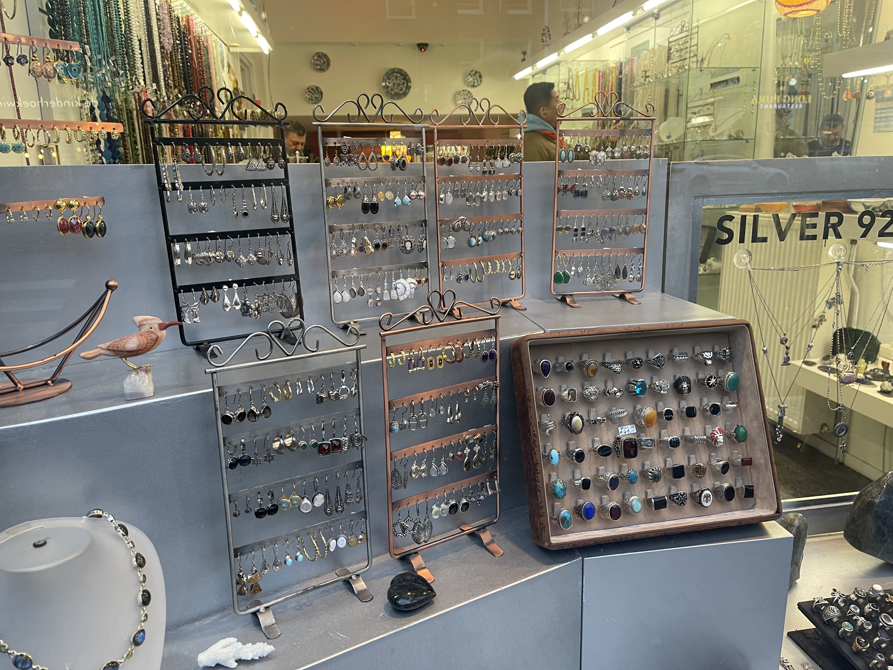
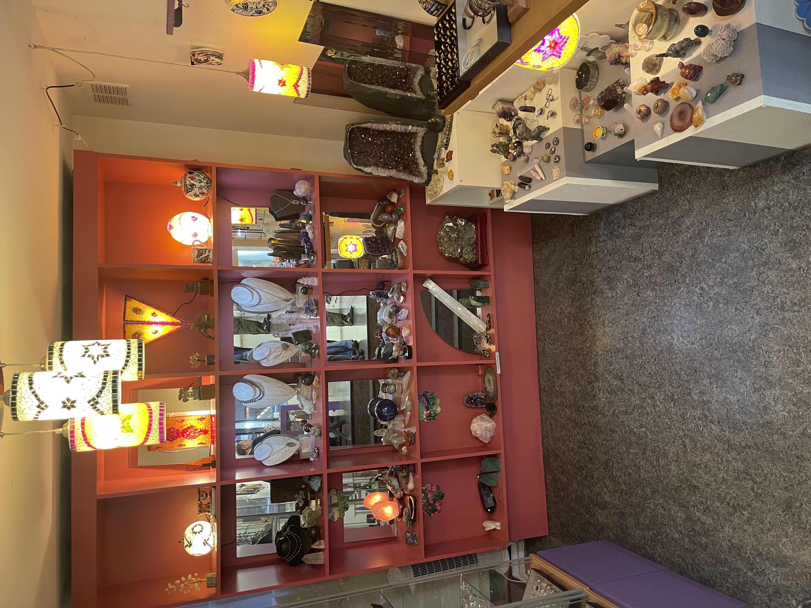

Babylon

Babylon is een klein sieraden winkeltje die te vinden is op: Rozengracht 37hs (1016 LR). Het winkeltje zit dus heel dicht bij Fabula Rosa wat erg handig is voor toeristen die naar zo veel mogelijk winkels tegelijk willen gaan. De winkel is de perfecte plek om wat nieuwe mooie spirituele sieraden te kopen en zelfs om edelstenen te kopen!
Het winkeltje is erg makkelijk bereikbaar met het openbaar vervoer het is vanaf de halte 'Westermarkt' maar 1 minuten lopen naar de winkel wat heel voordelig is voor toeristen. Ook zit de winkel vlak naast Fabula rosa wat erg handig is voor toeristen die naar meerdere spirituele winkels willen.
Pro's van de winkel

Je kan onderandere niet alleen sieraden kopen hier, maar ook edelstenen en magneten.

Babylon heeft veel verschillende sieraden en edelstenen die ze verkopen, vooral heel veel edelsteen sieraden, maar ze hebben ook een heel stuk voor bedeltjes voor kettingen.
Duurzaamheid
Babylon is misschien dan wel de laatste op de lijst, maar dat betekent niet dat hij minder duurzaam is dan de andere winkels! Ook Babylon is een duurzaam edelsteen winkeltje die zo groen mogelijk hun bestellingen inpakt. Verder zijn alle sieraden duurzaam gemaakt, ook zijn de edelstenen zeer goede kwaliteit en erg mooi.
Mijn Mening
Mijn eerste indruk van de winkel was dat het vooral een sieraden winkel is, wat een leuke verandering is van de andere winkeltjes aangezien die meer focussen op edelstenen, wel is daarom het assortiment van de winkel wat klein en zijn er weinig spirituele dingen naast de sieraden te koop. De winkel zelf is klein maar handig ingedeeld ik vind het erg handig dat het edelsteen gedeelte achterin de winkel is zodat het een beetje gesplitst staat van de sieraden. De zweer van de winkel was rustig, maar ik had niet echt een spiritueel gevoel bij de winkel ook omdat het meer sieraden waren natuurlijk. Kwa inrichting vind ik dat er wat meer decoratie mag komen zodat het een meer warm gevoel krijgt. De eigenaar van de winkel is een hele aardige man en een hele aardige verkooper. De winkel is wat prijziger omdat het natuurlijk sieraden zijn, maar alsnog vind ik dat de sieraden voor een eerlijke prijs worden verkocht. kortom vind ik dat deze winkel ook zeker een plekje op de Zweefgids verdient en geef ik de winkel daarom een 6/10.